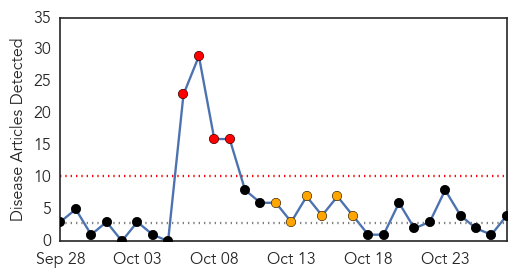
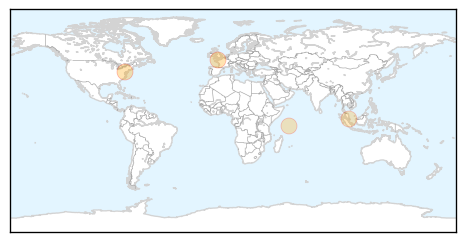
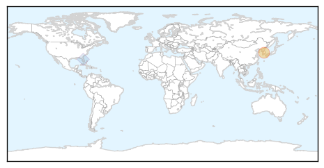

Hepatitis
30-Day Web Trend
4 alerts, 6 warnings

30-Day Twitter Trend
0 alerts, 0 warnings

Article Locations
Article Confidences

Top Articles:
- 0.920
- Doctors say all baby boomers should be tested for Hep C
- 0.914
- Why vaccinated people are so unhealthy: They're unknowingly sharing dirty syringes like drug users
- 0.775
- Seychelles readies to expand immunization programme: charity and telecom organisations join the health ministry to introduce Rotavirus vaccines in 2016
- 0.744
- 2 patients who tested positive as revealed on Oct 23 confirmed part of affected hepatitis C cluster, news, Health News, AsiaOne YourHealth
Top Tweets:
-
No tweets found for Oct 27, 2015
MERS
30-Day Web Trend
1 alerts, 0 warnings
30-Day Twitter Trend
3 alerts, 0 warnings
Article Locations
Article Confidences
Top Articles:
Top Tweets:
- 0.682
- AFD Blog `Saudi MOH Announces 4 MERS Cases (Riyadh & Hofuf)' MERS-CoV https://t.co/QTl9Dipaxc